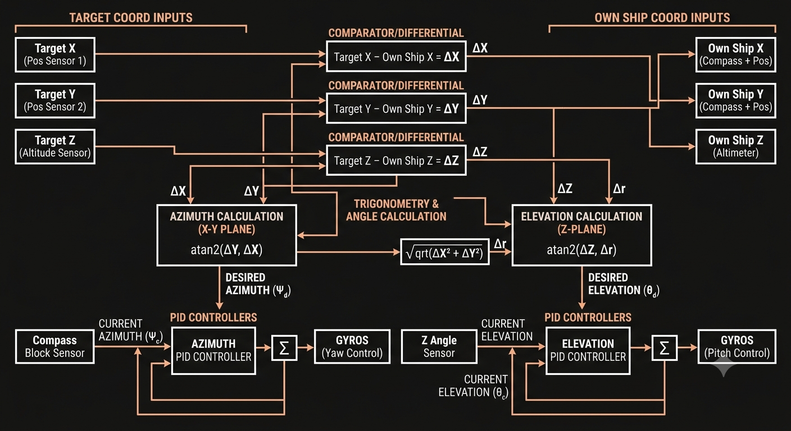

Trailmakers experiment
Tracking Missile Guidance System
The build is a tracker that receives the output from two position sensors tracking the x and y of the target, while also receiving its altitude. That means the tracker constantly receives the target's x, y, and z coordinates and compares them to its own position through subtraction to triangulate where it needs to point.
It uses the coordinate differences and inverse trig functions to compute the required angles in the x, y, and z directions. The compass block handles x/y plane orientation, while a separate angle sensor manages the z angle. Gyros then move the tracker until the actual and desired angles are aligned for both plane and vertical orientation.
Logic Schematic

In-Game Demo
The video shows the tracker engaging and following a target using sensor-based guidance rather than manual control.